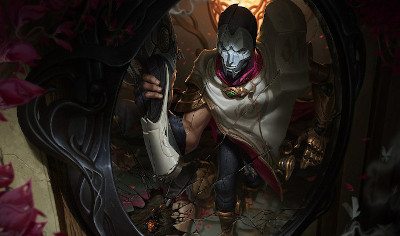

Jhin

Jhin is a meticulous criminal psychopath who believes murder is art. Once an Ionian prisoner, but freed by shadowy elements within Ionia's ruling council, the serial killer now works as their cabal's assassin.
Using his gun as his paintbrush, Jhin creates works of artistic brutality, horrifying victims and onlookers. He gains a cruel pleasure from putting on his gruesome theater, making him the ideal choice to send the most powerful of messages: terror.
Abilities
-
Passive
- Whisper -Jhin's hand cannon, Whisper, is a precise instrument designed to deal superior damage. It fires at a fixed rate and carries only four shots. Jhin imbues the final bullet with dark magics to critically strike and deal bonus execute damage. Whenever Whisper crits, it inspires Jhin with a burst of Move Speed.
-
Q
- Dancing Grenade -Jhin launches a magical cartridge at an enemy. It can hit up to four targets and gains damage each time it kills.
-
W
- Deadly Flourish -Jhin brandishes his cane, firing a single shot with incredible range. It pierces through minions and monsters, but stops on the first champion hit. If the target was recently struck by Jhin's allies, lotus traps, or damaged by Jhin, they are rooted.
-
E
- Captive Audience -Jhin places an invisible lotus trap that blooms when walked over. It slows nearby enemies before dealing damage with an explosion of serrated petals. Beauty in Death - When Jhin kills an enemy champion, a lotus trap will bloom near their corpse.
-
R
- Curtain Call -Jhin channels, transforming Whisper into a shoulder-mounted mega-cannon. It is able to fire 4 super shots at extreme range that pierce through minions and monsters, but stop on the first champion impacted. Whisper cripples enemies hit, which slows them and deals execute damage. The 4th shot is perfectly crafted, epically powerful, and guaranteed to critically strike.
Next champion
Return to Main Page
Return to top